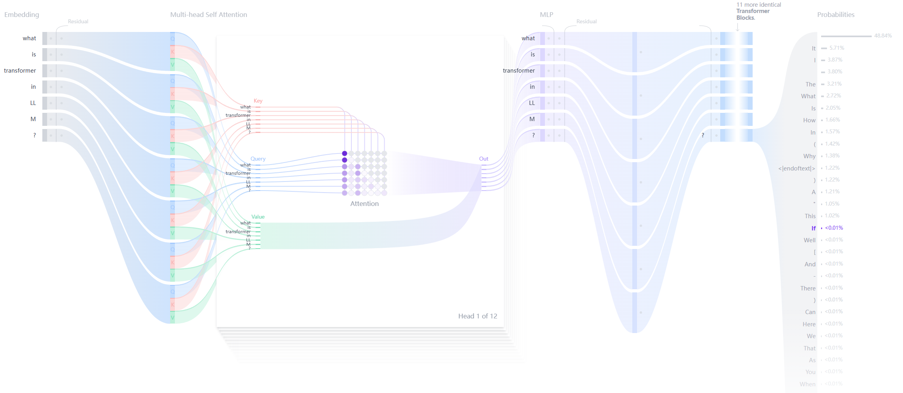

什么是 Transformer?
by @karminski-牙医

Transformer 是一种用于自然语言处理 (NLP) 的深度学习模型架构, 由 Vaswani 等人在 2017 年提出. 它主要用于处理序列到序列的任务, 如机器翻译, 文本生成等.
简单来讲, 文本生成的 Transformer 模型的原理是——"预测下一个词".
用户给定的文本 (prompt), 模型会预测下一个词最有可能是什么. Transformer 的核心创新和强大之处在于它使用的自注意力机制（self-attention mechanism）, 这使得它们能够处理整个序列, 并比之前的架构 (RNN) 更有效地捕捉长距离依赖关系.
另外需要注意的是, GitHub 上的 huggingface/transformers 是 HuggingFace 实现的 Transformer 模型库, 包括了 Transformer 的实现和大量的预训练模型.
目前的 LLM 基本都基于 Transformer 架构, 并对其进行优化技术和训练方法的改进.
Transformer 的结构
每个文本生成 Transformer 都由以下三个关键组件构成：
嵌入层（Embedding）：
- 文本输入被分割成称为词元（token）的更小单位, 可以是单词或子词
- 这些词元被转换成称为嵌入（embeddings）的数值向量
- 这些嵌入向量能够捕捉词语的语义含义
Transformer 块：
这是模型处理和转换输入数据的基本构建单元. 每个块包括：
- 注意力机制（Attention Mechanism）：
- Transformer 块的核心组件
- 允许词元之间相互通信
- 捕捉词语之间的上下文信息和关系
- 多层感知器（MLP）层：
- 一个前馈网络, 独立处理每个词元
- 注意力层的目标是在词元之间路由信息
- MLP 的目标是优化每个词元的表示
输出概率（Output Probabilities）：
- 最终的线性层和 softmax 层
- 将处理后的嵌入转换为概率
- 使模型能够预测序列中的下一个词元
Transformer 的优点：
- 并行化处理：与 RNN 不同, Transformer 不需要按顺序处理数据, 因此可以更好地利用 GPU 进行并行计算, 提高训练速度.
- 长距离依赖：自注意力机制使得 Transformer 能够有效捕捉序列中远距离的依赖关系.
- 灵活性：Transformer 可以很容易地扩展到更大的模型 (如BERT、GPT等) , 并在多种 NLP 任务中表现出色.
Transformer 的缺点：
- 计算复杂度高：自注意力机制的计算复杂度为O(n^2), 当输入序列长度较长时, 计算资源消耗较大.
- 数据需求大：Transformer 通常需要大量的数据进行训练, 以便充分发挥其性能.
- 缺乏内在的序列信息：由于没有内置的序列处理机制 (如 RNN 中的时间步) , 需要额外的机制 (如位置编码) 来引入序列信息.
Refs
关于 Transformer 的内容实在是太多, 很难在简单的一篇文章中介绍清楚, 所以本篇其实算是一个索引, 后续我会针对每个技术细节做详细的介绍.
另外本人虽然是从业者, 但更关注 LLM 下游应用, 对 LLM 训练本身经验并不多, 所以如果有任何错误还请大家指出.
这两个引用中, 第一个是关于 transformer 的最经典论文, Attention Is All You Need. 正是这篇论文首次提出了 Transformer.
第二个是关于 transformer 的可视化解释, 可以很直观的看到 transformer 的内部结构.